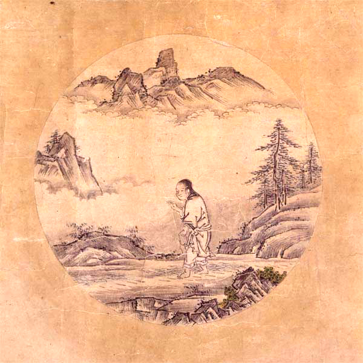
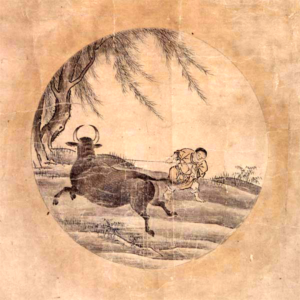
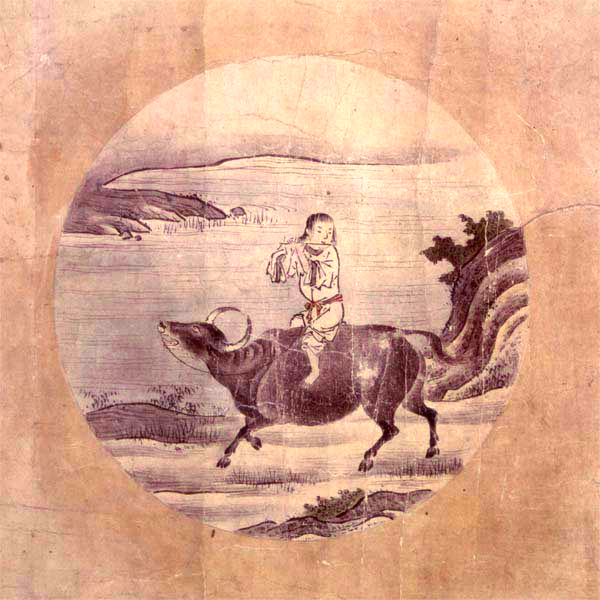
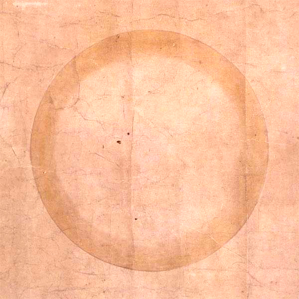
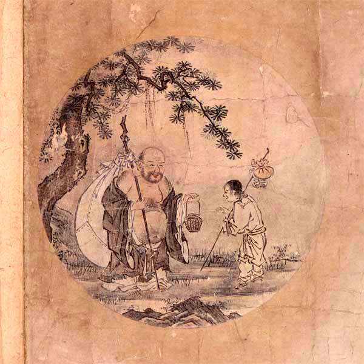

The Psychological Problems Caused by Tatenori
Here I will explain the psychological problems one faces when trying to overcome tatenori. I will discuss the psychological problems one confronts when facing one’s own tatenori, the instructional and psychological problems faced by both teachers and learners when guiding others, and the social problems one encounters when facing society after having confronted tatenori.
On Tatenori Unidirectionality
Here I would like to discuss Tatenori Unidirectionality. When a yokonori person tries to imitate the rhythmic sense of a tatenori person, that person can acquire it to some degree with a few years of practice. But when a tatenori person tries to imitate the rhythmic sense of a yokonori person, it may take at least ten years, and in some cases even twenty years may not be enough. I call this Tatenori Unidirectionality.
Because tatenori and yokonori differ in the very rules by which rhythm is interpreted, they cannot simply communicate with each other as they are. Whenever people try to speak language together or perform music together, one side must always suppress its own rhythmic sense and synchronize with the other. Yet while yokonori people can adjust to tatenori comparatively easily, it is not easy for tatenori people to adjust to yokonori people. That is Tatenori Unidirectionality.
Yokonori people can simulate a strong-beat-leading state by refraining from using the sense that weak beats come first. Tatenori people, however, possess only the sense that strong beats come first, so they must create, through new practice, a sense in which weak beats come first.
Most languages in the world outside Japan are yokonori. In phonological terms, this means that most of the world’s languages possess a rhythmic structure of either syllable-timed rhythm or stress-timed rhythm. In other words, the dominant communicative basis of music worldwide is yokonori. Globally, languages whose rhythmic structure is tatenori, that is, mora-timed rhythm, are very few. According to one view, Japanese may be the only fully mora-timed language.
When everyone is performing in yokonori and someone insists, “I will not change from tatenori,” that means that everyone present, whether there are 2 people or 1,000 people, must align themselves to tatenori.
The same thing happens inside Japan as well, because dialects throughout Japan are not necessarily unified under mora-timed rhythm. In fact, there is a theory that Japanese dialects become more stress-timed as one goes east. Beginning with the rapid, heavily reduced Edo dialect, many Tohoku dialects, unlike standard Japanese, show the kinds of pronunciation reduction characteristic of stress-timed languages. Likewise, many folk songs from Kanto and Tohoku are not fully tatenori, but often contain long anacruses.
The ability to respond to diversity is also an important foundation of cultural richness. The wider the world one enters, the more intensely one will collide with people who are different. The farther one goes, the more yokonori becomes the dominant rhythmic sense, and the more often the ideology of tatenori will be denied. Tatenori is, in essence, a form of ideological solitude.
To act freely in a broad society, one must be able to switch freely from tatenori to yokonori and from yokonori to tatenori. For a tatenori person to overcome tatenori, or for a yokonori person to overcome yokonori, becomes a weapon when entering the wider world.
But here, Tatenori Unidirectionality stands in the way as a massive obstacle.
Tatenori Unidirectionality causes not only technical problems but also psychological ones. Up to now I have explained the technical side, such as the theory and practice methods needed to overcome Tatenori Unidirectionality. But even before one can address those technical problems, psychological problems arise, making it difficult even to recognize the problem properly, and therefore difficult to engage with Tatenori Unidirectionality in the first place.
To deepen our understanding of these problems, I will examine them from two perspectives: psychological defense mechanisms and the Ten Bulls.
Tatenori and Defense Mechanisms
The Psychological Defense Mechanisms Produced by Unidirectionality
People react in many different ways when they become aware of the existence of the great barrier called tatenori.
Of course, there is no necessity to “fix” tatenori. Tatenori is not a defect. There is no reason to force anyone to stop being tatenori. Rhythmdo, after all, is only one means of showing respect and regard for the culture of others. Its primary purpose is to offer a clear answer to people who, having clearly recognized the difference between themselves and others, decide here and now to step deliberately into yokonori and ask how they can incorporate yokonori into their own identity. When one collides with tatenori, only each individual can decide whether to move forward or remain where they are.
When people confront the problem of switching from tatenori to yokonori, they despair.
There is something hard to face directly in the contrast between the absolute world of desire that lies beyond tatenori and the hopelessly vast scale of tatenori as a barrier. At that point, various psychological mechanisms often arise unconsciously in order to protect the stability of one’s own mind. To face those mechanisms directly after becoming aware of them in oneself, it is important to understand them well.
People who have seen tatenori often ask themselves the following question: why, in the first place, must one even become aware of tatenori?
- Why is tatenori not enough?
- Why is it necessary to become aware of tatenori?
- Why must one confront tatenori?
- Why is it necessary to know tatenori?
- Why must tatenori be corrected?
- Why must one confront tatenori?
- Why is it necessary to know yokonori?
- Why is it necessary to make peace with yokonori?
The most important point here is this: in truth, the person does not really believe that tatenori can simply be left unconfronted. On the contrary, that person has already noticed tatenori, has repeatedly struggled to overcome it, has collided with its difficulty, and is crushed and suffering. The more clearly one notices tatenori, the more directly one confronts the difficulty of solving it, and the more one despairs. Out of fear of that despair, one avoids looking the difficulty in the face and tries to shift responsibility elsewhere. In other words, one tries to rationalize it.
At that point, the more one interprets that person’s behavior as “making light of the tatenori problem” and tries to “make them understand how important the tatenori problem is,” the more strongly that person will reject it.
In other words, understanding psychological mechanisms is important both for understanding oneself and for understanding others.
What Is Tatenori?
Tatenori
The Problem of Tatenori
The problem of tatenori has two major dimensions.
- First, native speakers of Japanese have great difficulty even perceiving syncopation itself.
- Second, when one tries to acquire syncopation within Japanese society, one must face not only the difficulty of learning rhythm but also heavy social pressure.
The Technical Problem of Tatenori
Tatenori and yokonori cannot be played simultaneously.
On the Yokonori Loudness Illusion
- To tatenori people, yokonori sounds loud.
- -> Rhythmic displacement makes the separation of sounds stand out clearly.
- -> Tatenori people are shocked by the prominence of an unfamiliar kind of sound.
- -> The reaction becomes: “The sound is way too loud!!!!”
- This creates a structure in which yokonori is excluded within tatenori session culture.
On Tatenori Defense Mechanisms
- Everyone wants to groove.
- -> But because of the constraints of Japanese, native speakers of Japanese face major difficulty when trying to perform foreign groove.
- -> Everyone strongly admires overseas music and aspires to music. Everyone stakes life itself on music and pays enormous sacrifices for it. But after many years of hardship, when a person realizes that true music is in fact not something they can obtain at all, that person is placed at risk of psychological collapse.
- -> At that point, uniquely Japanese reactions arise.
- -> This is what I call Tatenori Gomanism.
What Is Tatenori Gomanism?
- Note carefully that the rhythm called tatenori is not itself the problem.
- When one realizes that yokonori cannot be obtained, negative emotions such as jealousy and envy arise.
- In order to avoid facing that despair directly, all kinds of psychological defense mechanisms begin to operate.
- These often appear outwardly as attacks on people who aspire to groove.
Examples of Tatenori Defense Mechanisms
Repression
When unpleasant or painful feelings are hard to admit into consciousness, one unconsciously forgets them or prevents oneself from noticing them. When this is intentional and conscious, it is called suppression.
“Huh? Aren’t you the only one who cares about tatenori, Oka?”
Denial
One perceives reality and yet excludes it from consciousness and refuses to admit it, telling oneself that the pain is “not a big deal.”
“Tatenori isn’t really that big a problem, is it?”
Regression
Returning to an earlier developmental stage. A kind of childish reversion.
“Screw you! You bastard!” (suddenly shouts during the performance)
Transference
Replacing emotions originally directed toward a particular person with a very similar person, such as the psychoanalytic therapist. Positive transference takes the form of affection or dependency, while negative transference takes the form of hostility or disgust.
“Wow, Oka-san, your playing sounds just like Wes Montgomery!”“Wow, what you’re saying is exactly the same as George Otsuka, isn’t it?”
Projection
Because one finds it hard to accept feelings directed toward another person as one’s own, one imagines that the other person is directing those feelings toward oneself.
“Why are you denying tatenori like that!?”
Reaction Formation
Speaking and acting in a way that is the opposite of one’s true feelings.
“No, I don’t really want to become yokonori anyway.”
Sublimation
Replacing antisocial desires with something more socially adaptive.
“I still keep practicing with the metronome every single day because I want to master yokonori.”
Compensation
Making up for feelings of inferiority in some other direction. “If you lose in athletics, win in academics.”
“I bought a vintage Gibson the other day! It cost me hundreds of thousands of yen!”
Rationalization
Making something look logical on the surface while actually distorting an inconvenient reality, or selecting only convenient parts of reality, in order to justify one’s own desires and emotions by shifting responsibility elsewhere.
“Oka-san, you talk as if you’re explaining tatenori theoretically, but in the end you’re just compensating for your own inferiority complex. The proof is that nobody agrees with you. So which of us is the one who can’t face reality?”
“Here comes the rhythm police again lol”
“Rhythm old man lol”
The Difficulty of Dealing with Tatenori Gomanism
- Tatenori Gomanism often takes on the aspect of collective hysteria and easily leads to the phenomenon of a group attacking an individual.
- -> It begins to take on the structure of bullying found in Japanese society.
- -> As a result, within session culture, simply bringing up the topic of rhythm can provoke hypersensitive reactions, let alone aspiring to groove.
The Problems Caused by Tatenori Gomanism
- People become afraid of encountering Tatenori Gomanism.
- -> It becomes difficult even to touch on the topic of rhythm.
- -> People who aspire to yokonori groove have no opportunity to meet each other.
The Proper Response to Tatenori
- Strike a balance between tatenori and yokonori.
Considering the Balance Between Tatenori and Yokonori
- Building a motorcycle
- Valuing certainty and stability
- -> tatenori
- Valuing certainty and stability
- Riding a motorcycle
- Enjoying the freedom brought by instability
- -> yokonori#### For a Modern Japanese Person, Complete Yokonori Means Ruin
- Enjoying the freedom brought by instability
- In fact, if one simply throws away tatenori, becoming yokonori is easy.
- Rather, one should acquire the ability to switch into yokonori whenever one wishes.
- To do that, reinterpret yokonori through tatenori and use it as a trigger for switching.
Conveying the Merits of Tatenori Through Yokonori
- Enka, anime songs, game music, and so on… the world wants Japan.
- -> But tatenori is unintelligible to yokonori people.
- -> Master yokonori, and translate tatenori into yokonori.
Conveying the Merits of Tatenori Through Yokonori
- Offbeat metronome practice
- Offbeat Count practice
Tatenori and the Ten Bulls
The road to becoming aware of one’s own tatenori is long, steep, and painful. But what lies beyond truly understanding tatenori and overcoming it has an irreplaceable value. It can also be described as a long road toward harmonizing the strengths of Japan, East Asia, Southeast Asia, Europe and America, Africa, and indeed the strengths of all the world’s cultures. All of that richness is hidden beneath the enormous lid called tatenori.
This enormous lid plays an important role. Without it, Japan could not be Japan. It is a vital defensive wall protecting Japan, and at the same time it is also an obstacle that prevents Japan’s excellence from being conveyed outward.
Long training is required before one can recognize the existence of this lid, notice that it is there, and become able to open and close it freely.
This long road resembles very closely the path described in Zen by the Ten Bulls. So here I would like to use the Ten Bulls as an example to explain the long road leading up to the moment one notices tatenori.
Not Noticing One’s Own Tatenori
Tatenori when walking, tatenori when running, tatenori when standing, tatenori when sitting, tatenori when dancing, tatenori when raising the hands, tatenori when raising the head, tatenori when lowering the hands, tatenori when lowering the head, tatenori when angry, tatenori when laughing, tatenori in whatever one does: objectively speaking, Japanese movement has clear and immediately recognizable characteristics.
Yet Japanese people cannot notice those characteristics. The reason is that they have no point of comparison.
The Difficulty of Noticing Tatenori
Even when tatenori people communicate with one another, they do not notice the characteristic called tatenori, because the other person does not function as a comparison. Only when one encounters a yokonori person for the first time does one become able to notice the existence of tatenori.
Even when such an encounter with yokonori occurs, however, it means no more than that the person has acquired a point of comparison. That alone does not necessarily mean they notice the existence of tatenori. From there, the person clashes with the otherness called yokonori, notices their own difference within that clash, then clashes with that difference within themselves, and eventually realizes that what they have been clashing with is not merely the other person, but their own characteristic hidden inside themselves. Unless they can recognize that the enemy is inside themselves and find the resolve to face that enemy sincerely, they cannot truly notice the existence of tatenori.
This is mental work of extremely high difficulty, comparable to Buddhist practice. To confront a philosophical difference sincerely for more than ten years and search the self through it is by no means easy.
Here, as a weapon for facing the enemy called tatenori that lies hidden within oneself, I will use the rhythm theory introduced so far to explain the mechanism by which tatenori arises.
For that reason, I will first introduce the Zen concept of the Ten Bulls. The Ten Bulls has many similarities to the road by which a tatenori person comes to notice their own tatenori. To know the meaning of the Ten Bulls is one important weapon for confronting tatenori.
The Road to Overcoming Tatenori and the Ten Bulls
The process of understanding and overcoming tatenori can be described as nothing less than the process of confronting and transforming one’s own recognition. Since it is recognition itself that is being transformed, before that transformation the problem itself is not visible. Then, as recognition transforms, one notices the existence of the problem; then recognition transforms still further, and one notices the existence of new problems. This contains the higher-order philosophical problem of self-reference.
- One does not notice the existence of tatenori at all.
- One notices the existence of tatenori, but cannot yet grasp that there is a difference.
- One notices that there is a difference in tatenori, but cannot yet grasp what the difference is.
- One can point out the difference between tatenori and what is not tatenori, but still does not know where the difference lies.
- One understands where tatenori and non-tatenori differ, but still does not know why they differ.
- One understands why they differ by comparing tatenori and non-tatenori, but still cannot grasp the whole picture.
- One does not even notice that one has not grasped all the differences.
- One becomes able to perform in yokonori alone, but as soon as a tatenori sound is heard, one is drawn back into tatenori.
- One does not notice that one has fallen back into tatenori.
- One can hear the difference, but cannot physically demonstrate non-tatenori movement with one’s own body.
- One does not notice that one’s own movement has become tatenori.
- One notices that one’s movement has become tatenori, but cannot correct it.
- One notices that one’s movement has become tatenori and can correct it, but cannot correct everything.
- Unless one is conscious of it, one cannot suppress tatenori movement.
- Unless one is conscious of it, one falls back into tatenori.
- Even without conscious effort, one can maintain yokonori without falling back into tatenori.
- One can maintain yokonori without consciously thinking about anything.
- At any time, one can instantly and freely switch between tatenori and yokonori.
This process is represented with great clarity by the Chinese Zen teaching of the Ten Bulls.
The Ten Bulls
The Ten Bulls refers to ten images used in Zen thought to visualize the path toward enlightenment. It is known that many versions of the Ten Bulls exist, and the most widely known versions are thought to be the Ten Bulls of Kakuan from the Song dynasty and the Ten Bulls of Zen Master Puming.
The ox-herding pictures usually consist of both poem and image, and the poem itself may sometimes be accompanied by a short preface. Since the Song dynasty, many such works have been produced, and among them the three particularly noteworthy ones are Qingju, Kakuan, and Zide. Qingju’s work has five pictures, Kakuan’s has ten, and Zide’s has six. Among these works, Kakuan’s is generally considered the most complete.

|
 |

|
 |

|
|
 |

|
 |

|
 |
The Meaning of the Ten Bulls
The explanation of the Ten Bulls given below is an abridged translation of the Ten Bulls commentary by the Chinese Buddhist school Xueshan Chanyuan.
The Ten Bulls is a set of symbolic images and verses depicting ten stages of practice, compiled by the Song-dynasty Zen monk Kakuan Zenji. The bull symbolizes the “original mind” or Buddha-nature, and through the journey of searching for the bull, it expresses the road by which human beings awaken to the Buddha-nature they originally possess and arrive at enlightenment.
These ten stages are not merely a sequential program of practice. They show that there is a chance for enlightenment in every moment. They teach that what matters is returning to the essence of mind, without becoming bound by words or forms.
1. Searching for the Bull
- This is the state in which one has begun practicing in search of the “bull” that symbolizes Buddha-nature, but still cannot find it. Human beings originally possess Buddha-nature, yet forget it, fall into the world of delusion and discrimination, and drift away from their true self.
It is the stage of seeking one’s true mind in the midst of confusion. The bull, that is, the true mind, is in fact always there, but we fail to notice it and keep seeking outside ourselves. On encountering the Buddhist teaching, one finally awakens to the need to search for the true mind.
2. Seeing the Tracks
- Even if one tries to search for Buddha-nature by relying on sutras or the teachings of a master, one still cannot escape the world of delusion and discrimination, and sees not the bull itself, but only its tracks.
At last one finds the bull’s tracks, that is, traces of the true mind. One begins to notice that the workings of the true mind appear in all the perceptions, sensations, and emotions of everyday life. Yet many people still cling to words and forms and lose sight of the true mind within themselves.
3. Seeing the Bull
- This is the stage in which, after accumulating practice, one finally sees the bull itself with one’s own eyes. It is the realm in which one begins to feel the true self, Buddha-nature.
The figure of the bull comes clearly into view. In other words, this is the stage at which one begins directly to feel Buddha-nature and the true mind. Through the six faculties - eye, ear, nose, tongue, body, and mind - one begins to find the working of Buddha-nature in all phenomena.
4. Catching the Bull
- Even if one has once caught the bull, that is, Buddha-nature, it is not easy to control it completely, and at times it may still break free. This symbolizes both the difficulty of practice and the need for patience.
At last one is able to catch the bull. The sense of enlightenment becomes clear, yet the mind is still unstable, delusions and habits remain strong, and continued effort in practice is necessary.
5. Taming the Bull
- This represents the stage of steadily taming the bull. Once one has truly gained one’s own nature, that is, Buddha-nature, one must watch over and regulate it carefully so as not to lose it. As practice deepens, the bull gradually becomes more obedient.
This is the stage of training the bull thoroughly. In everyday life one watches over the mind and becomes able to notice immediately when delusion arises. This practice of “taming the bull” is the true core of real practice.
6. Riding the Bull Home
- This represents the state in which the bull and the herdsman, that is, the practitioner, have become completely one, and peace of mind has been attained. There is no longer any need to control the bull, and one returns gently to the place where one originally belongs.
This is the stage of riding the bull leisurely back home. There is mental stability and a sense of release, and even without forcing anything the mind is in harmony with its essence. One becomes able to live naturally within the lingering resonance of enlightenment.
7. Forgetting the Bull, Remaining with the Person
- This represents the state in which the practitioner, having returned to the original place of the mind, has forgotten even the fact of catching the bull. At this stage, the bull, that is, Buddha-nature, has become natural and is no longer a special object of consciousness.
The bull, that is, Buddha-nature, is forgotten, and only the person, the subject, remains. The bull has already been completely tamed, and even without conscious effort the mind no longer becomes disturbed, allowing one to live in ordinary composure. Attachment even to enlightenment disappears, and one reaches the state of effortless naturalness.
8. Both Person and Bull Forgotten
- This represents the state in which the reason for trying to catch the bull, the fact of having caught it, and even the act itself have all been forgotten. The distinction between subject and object disappears, and one reaches the complete state of no-self and no-mind in which there is not even any act of forgetting.
This is the stage in which both person and bull are forgotten together. Even the object and subject of practice disappear from consciousness, and one enters the state of no-mind and no-self. One goes beyond the workings of knowledge and language and reaches a depth of enlightenment that cannot be expressed in words.
9. Returning to the Source
- This represents the state of returning to a pure and immaculate realm from which all attachment and discrimination have disappeared. It shows the state of accepting the world exactly as it is and recognizing both the true self and the fundamental nature of the world.
After attaining enlightenment, one returns still further to “the way things originally are.” The awakened person is bound neither by worldly concerns nor by enlightenment itself. What is portrayed is a life lived quietly and naturally.
10. Entering the Marketplace with Open Hands
- This shows that even after attaining enlightenment, it is meaningless merely to remain in that state. The ultimate purpose is to reenter the ordinary world, live together with other people, bring them peace, and guide them with compassion and wisdom.
In the final stage, the person who has completed practice returns once more to ordinary society and outwardly lives as an ordinary person. Without flaunting the appearance of practice or enlightenment, that person lives in natural contact with others and conveys the Buddha Dharma.
Table of contents
- Offbeat Count Theory
- Introduction
- What Are the Four Principles of Groove?
- Why Are Japanese People Tatenori
- Which Comes First, the Strong Beat or the Weak Beat
- Phonorhythmatology
- A Letter to Mora-Timed Language Speakers
- Split Beat (Schizorhythmos) and Isolated Beat (Solirhythmos)
- What Is Metre
- Multi-Layered Weak-Beat-Oriented Rhythm
- Multidimensional Division Spaces
- Rhythm More Important Than Pronunciation
- The World Is Made of 3⁻ⁿ Metres
- 3⁻ⁿ Groove and 2⁻ⁿ Groove
- Distributed Groove Theory
- Weak-Beat Geocentrism and Strong-Beat Heliocentrism
- Introduction to Offbeat Count
- Rhythmochronic Competence and Sense of Rhythm
- Master English Listening with Offbeat Count
- Etudes for Mora-Timed Language Speakers
- Proper English Pronunciation
- Correct Pronunciation of Offbeat Count
- Multilayer Weak-Beat-Precedence Polyrhythm
- The Elements That Shape Rhythmic Nuance
- The Mechanism by Which Tatenori Arises
- Tatenori and the Perception of Movement
- The Psychological Problems Caused by Tatenori